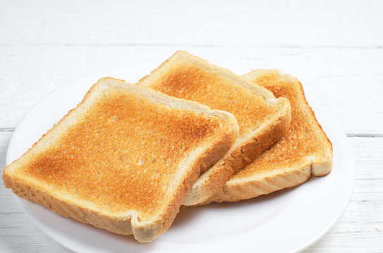

Sunshine Toast

Description
This is a recipe of tosat I took from the site allrecipes.
I like crunchy toast with eggs so I added this recipe as well.
Ingredients
- 1 slice of Bread
- 2 tablespoons of Butter, melted
- 1 large Egg
- Salt, to taste
Steps
- Cut a circle in the center of bread with a cookie cutter. Brush melted butter on both sides of bread.
- Heat a small skillet over medium heat. Add bread and cook until golden brown, about 2 minutes. Flip, then crack egg into the hole. Cook until egg is set on the bottom, about 1 minute; season with salt. Cover, reduce the heat to low, and cook until egg white is completely set, 3 to 4 minutes.